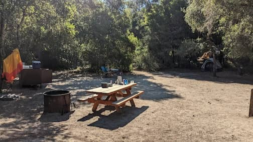
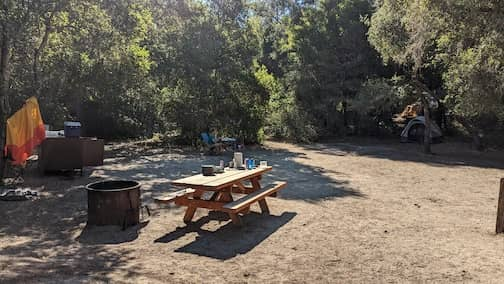

..
Henry Cowell Camping
Sep 5 - 8. Henry Cowell State Park. Campsite #42
Nice campsite, hot showers, 1 hour away from home. 10/10.
 Our very big campsite. #42
Sep 5 - 8. Henry Cowell State Park. Campsite #42
Nice campsite, hot showers, 1 hour away from home. 10/10.
 Our very big campsite. #42